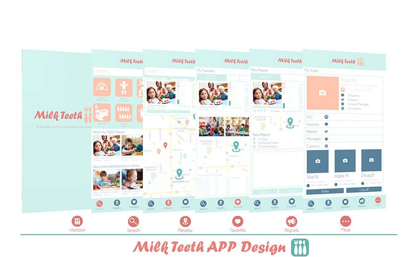
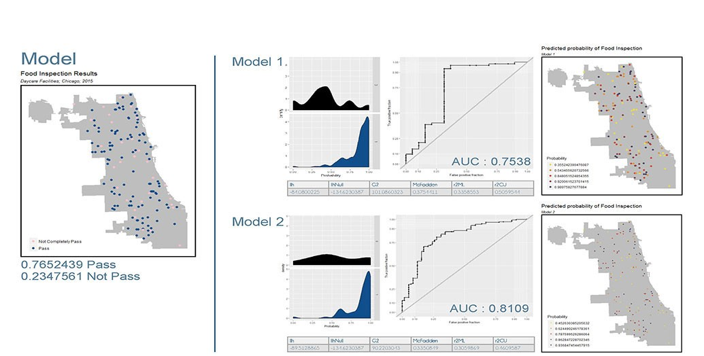
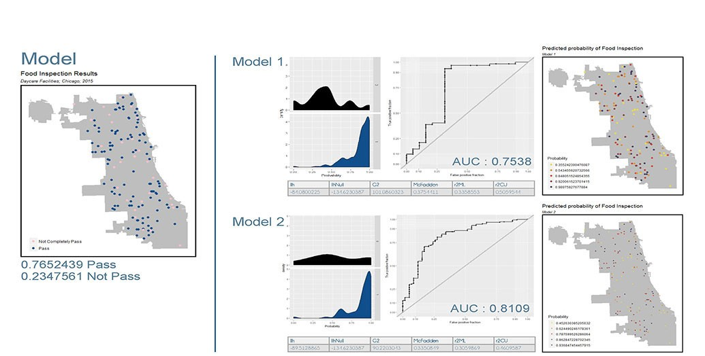
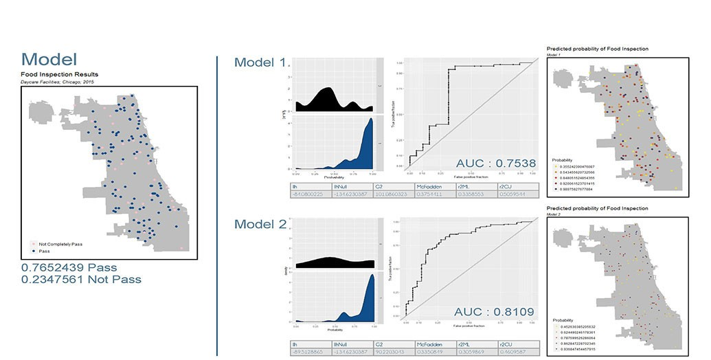

 


Predicting Food Inspection Failure in Chicago
Intro
Food safety is an important social issue, particularly for children. Parents, government, and all parties in the society are paying more and more special attention to children’s food safety. However, the resources of inspection are limited, and sending inspectors to all the daycare centers to inspect their food safety is time-consuming, expensive and almost unrealistic. In this case, we would like to introduce an app, Milk Teeth, which is designed especially to help involve more public participation, especially parents, in children’s food safety inspection.
App Design
This APP has five main interfaces Search, Nearby, Favorite, Report and More to help new parents select a daycare center. It will not only equip them with the most detailed information of all the daycare centers in Chicago, but also help report the food safety issues that users found in food safety in any daycare center, and keep in touch with the parents or the food inspection departments.
Data
The data of building this model comes from the primary data set of food inspection in Chicago. In the model, we used the daycare centers’ 2015 to 2016 data. The independent variables are mostly found from online open data sets including Chicago Open data, which include the daycare center previous inspection result, the community’s sanitary data, social economic data and statistics about the residents’ health conditions.
The logic behind the APP is a logistic regression model. It has a high AUC value of 0.81, which indicates that there might be 19 percent error in the food inspection results, which is good in accuracy but not over predicting. By checking the results spatially, the high probabilities of pass are all located close to the results of pass, and the results of significant coefficients are not surprising because the sanitary condition complaints and the history inspection results are displayed as most significant predictors.
Conclusion
As a conclusion, we would recommend the Food Protection Division of the Chicago Department of Public Health to promote our model to the public. It’s not only because the model behind the APP has a high goodness of fit, but also because it has included quite a lot of local intelligence and helps with building up public participation in building up good food safety environment. Since our sample size is relatively small, we might need further improvement for the data collection.